دکتر مسعود گوهری منش
دانشیار گروه مهندسی مکانیک — دانشگاه تربت حیدریه
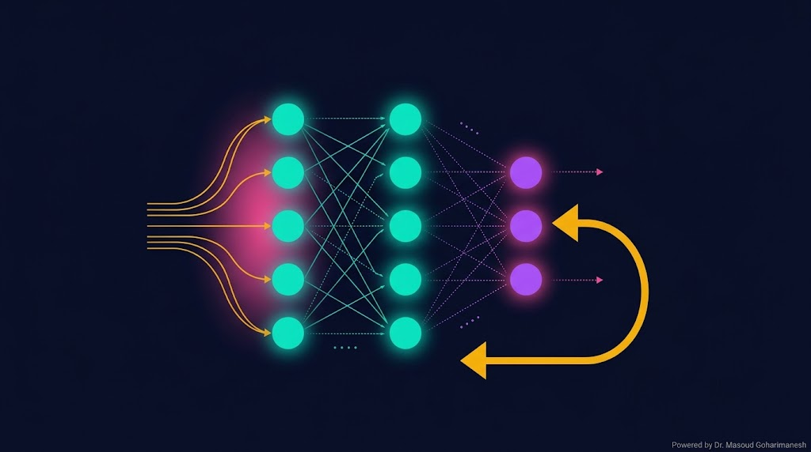
(Neural Networks & Backpropagation) — جلسه ۱۸
دکتر مسعود گوهری منش
دانشیار گروه مهندسی مکانیک — دانشگاه تربت حیدریه
Backpropagation قلب آموزش شبکههای عصبی است. این الگوریتم، خطا را از خروجی به ورودی منتقل میکند و به هر نرون میگوید چقدر در خطا نقش داشته است. بدون این الگوریتم، شبکههای عصبی نمیتوانند یاد بگیرند.
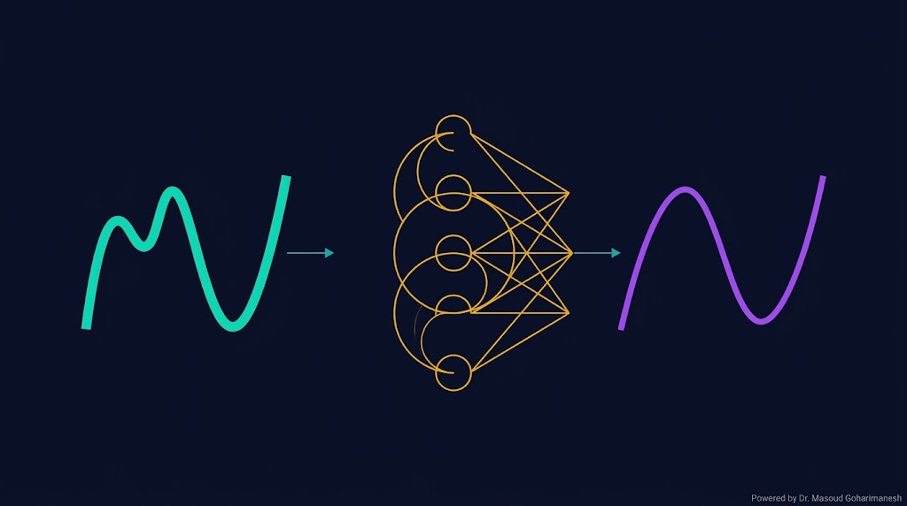
قضیه تقریب جهانی (Universal Approximation Theorem) میگوید: یک شبکه عصبی با یک لایه پنهان و تعداد کافی نرون، میتواند هر تابع پیوسته را با دقت دلخواه تقریب بزند.
ویژگیهای پیچیدهتر
مدلسازی پیچیدگی
الهام از مغز انسان
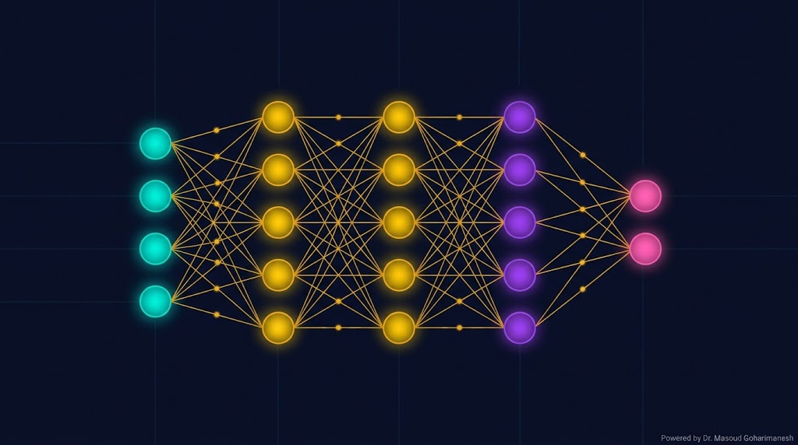
دریافت دادههای ورودی. تعداد نرون = تعداد features.
مثال نانو انبرک: ۵ نرون
لایههای میانی که ویژگیها را استخراج میکنند.
مثال: ۳۲ → ۱۶ نرون
خروجی نهایی — پیشبینی یا طبقهبندی.
مثال: ۱ نرون ($V_{pull-in}$)
Forward Propagation — انتشار رو به جلو
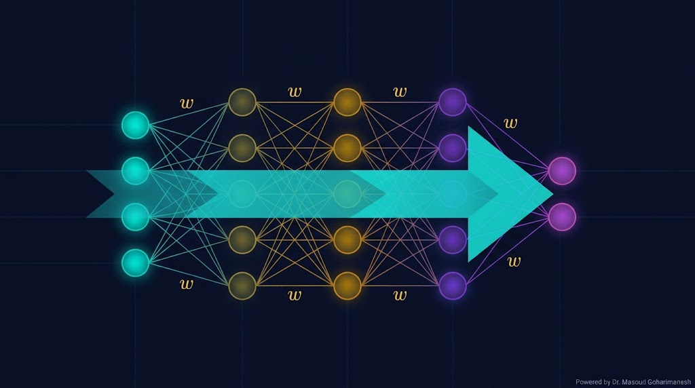
در Forward Pass، داده از ورودی به خروجی منتقل میشود و در هر لایه تبدیل خطی + غیرخطی انجام میشود:
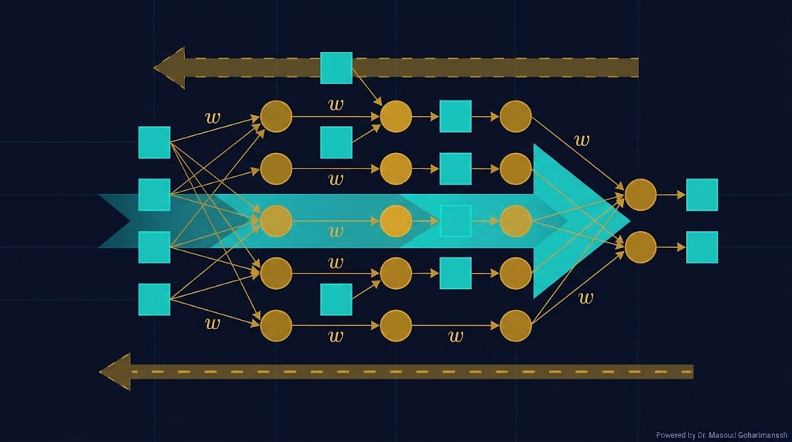
یک computational graph نمایش گرافیکی از عملیاتهای ریاضی است که در Forward Pass انجام میشوند. هر گره یک عملیات، و هر یال یک تانسور (داده) است.
محاسبه خروجی
محاسبه خطا
محاسبه گرادیان
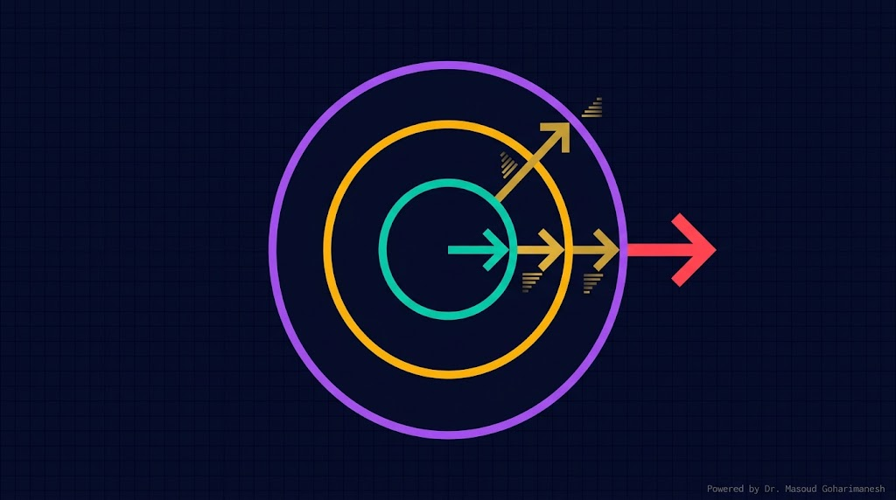
Chain Rule پایهی Backpropagation است. اگر $y = f(g(h(x)))$، آنگاه:
که $u = g(v)$ و $v = h(x)$
مثال عددی: فرض کنید $y = (2x + 1)^2$ و $x = 3$.
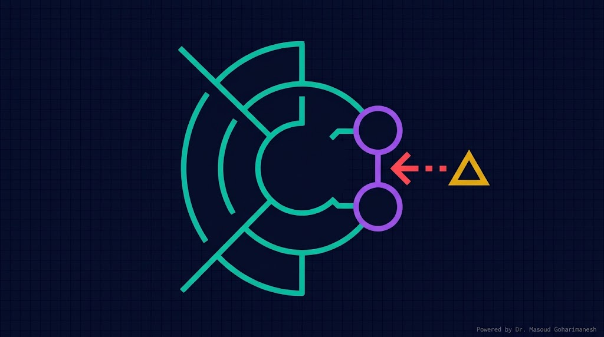
ابتدا گرادیان Loss نسبت به خروجی ($\hat{y}$) محاسبه میشود. برای MSE:
سپس برای لایه آخر، گرادیان نسبت به $z^{(L)}$:
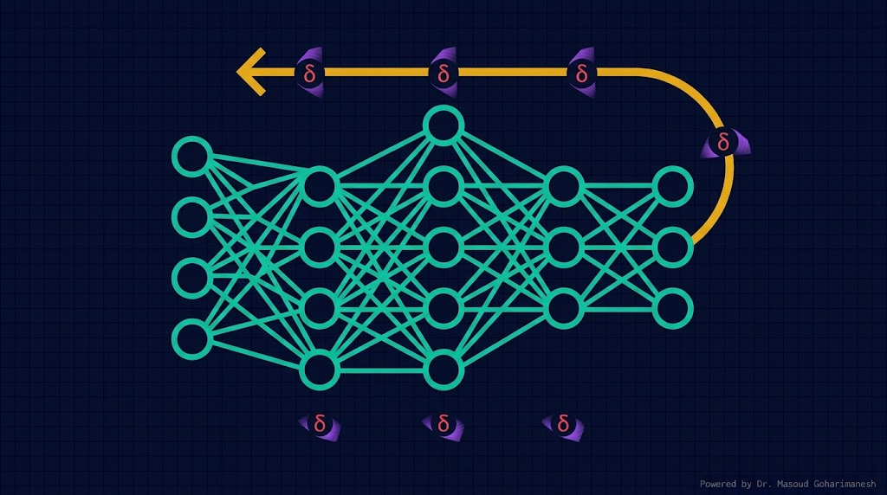
Backpropagation یک الگوریتم بازگشتی است که گرادیان Loss را نسبت به همه پارامترها محاسبه میکند:
محاسبه خروجی $\hat{y}$ و Loss $\mathcal{L}$
از لایه $L-1$ تا لایه $1$
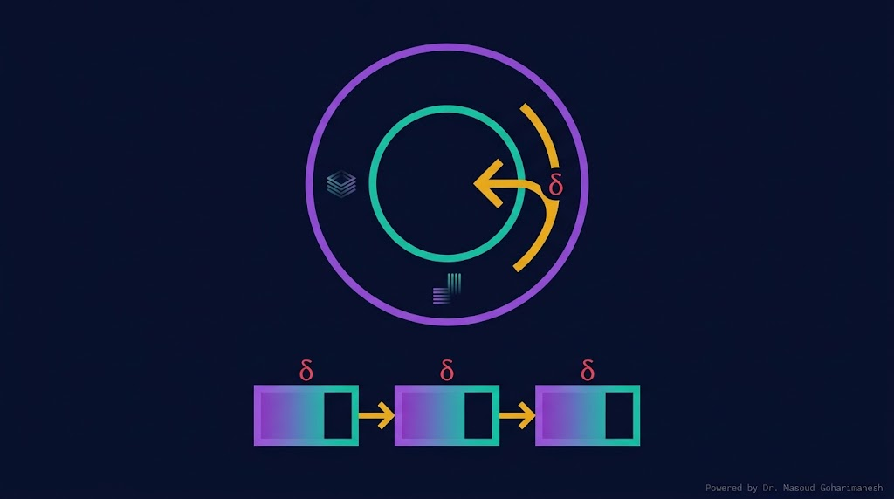
گرادیان لایه آخر
فرمول بازگشتی برای لایههای میانی
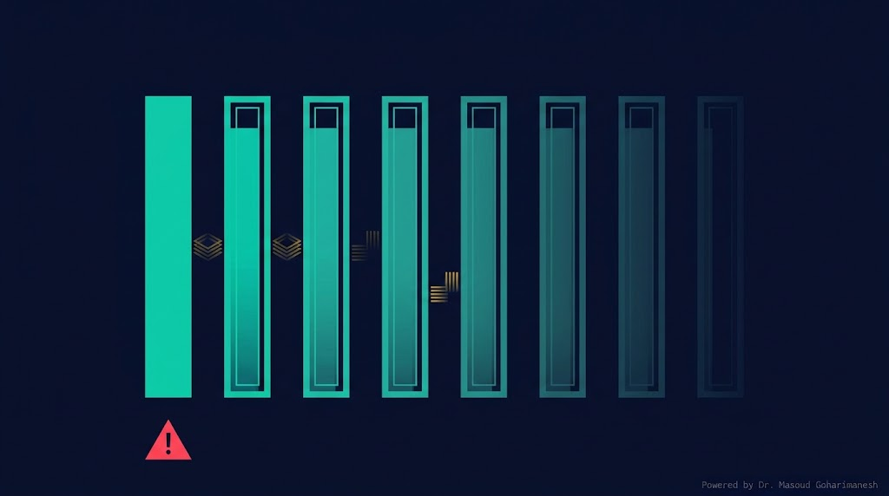
در شبکههای عمیق با تابع فعالسازی Sigmoid یا Tanh، گرادیان در هر لایه کوچکتر میشود و در لایههای اولیه به صفر میل میکند.
هر ضرب، گرادیان را کوچکتر میکند
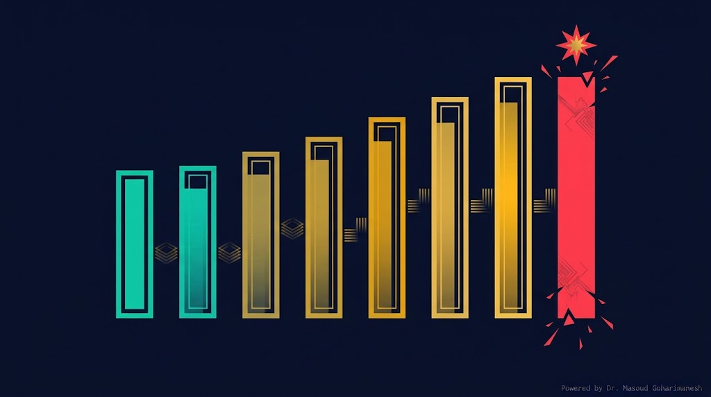
اگر وزنها بزرگ باشند یا تعداد لایهها زیاد باشد، گرادیان بهصورت نمایی رشد میکند و باعث NaN یا نوسان شدید میشود.
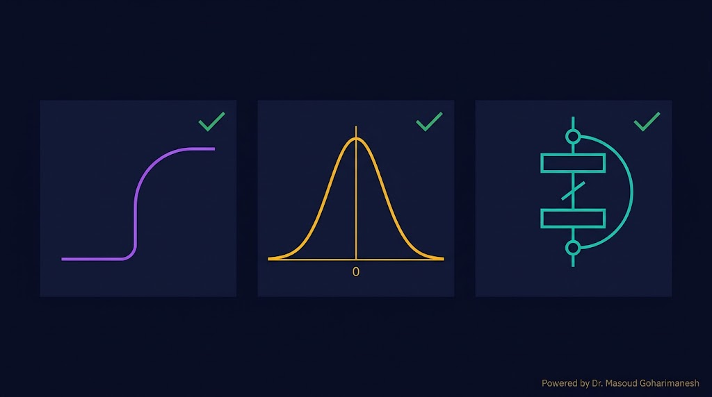
مشتق ثابت — گرادیان ناپدید نمیشود
نرمالسازی ورودی هر لایه — گرادیان متعادل
Skip Connection — گرادیان مستقیم به لایههای اولیه
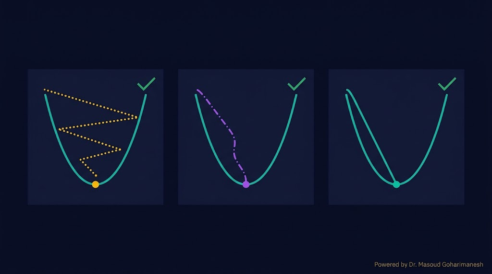
سادهترین بهینهساز
همه داده در هر گام — دقیق ولی کند
یک نمونه در هر گام — سریع ولی نویزی
Momentum گرادیانهای قبلی را جمع میکند تا از local minimum و نوسان جلوگیری کند:
$\beta \in [0.9، 0.99]$ — ضریب اصطکاک
همگرایی سریعتر
پایدارتر
بهتر
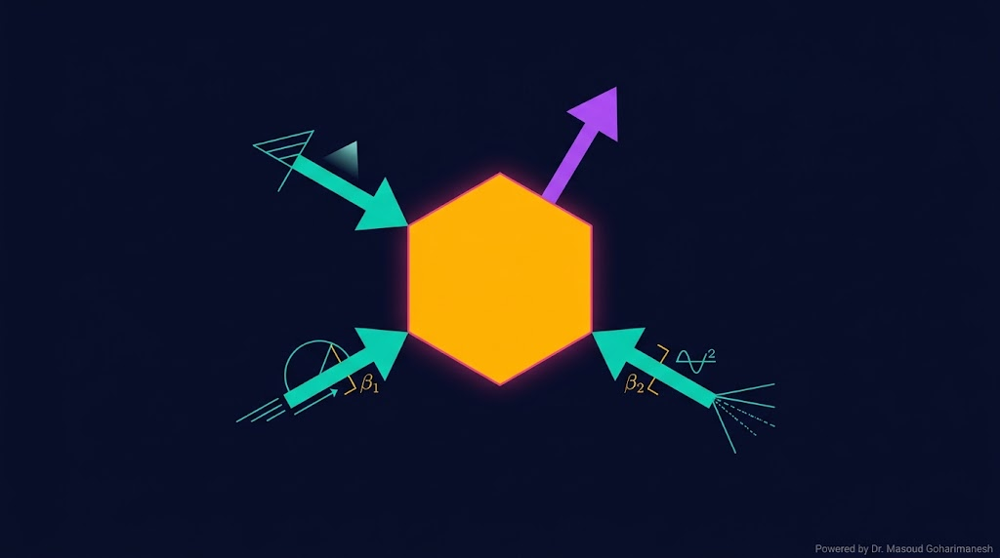
Adam (Adaptive Moment Estimation) ترکیبی از Momentum و RMSProp است. امروز استاندارد صنعتی برای آموزش شبکههای عصبی.
torch.optim.Adam
# ============================================ # Neural Network with Backprop from scratch # ============================================ import numpy as np # --- داده مصنوعی --- np.random.seed(42) N = 500 # Features: [L, b, h, E, g] — پارامترهای نانو انبرک L = np.random.uniform(30e-6, 100e-6, N) b = np.random.uniform(3e-6, 10e-6, N) h = np.random.uniform(0.3e-6, 1.5e-6, N) E = np.random.uniform(100e9, 200e9, N) g = np.random.uniform(100e-9, 400e-9, N) # Label: V_pull-in eps0 = 8.854e-12 I = b * h**3 / 12 k_eq = 8 * E * I / L**4 V_pullin = np.sqrt(8 * k_eq * g**3 / (27 * eps0 * b * L)) # Normalization X = np.stack([L, b, h, E, g], axis=1) X_mean, X_std = X.mean(0), X.std(0) X_norm = (X - X_mean) / X_std y_mean, y_std = V_pullin.mean(), V_pullin.std() y_norm = ((V_pullin - y_mean) / y_std).reshape(-1, 1) # --- معماری --- n_in = 5 n_h1 = 32 n_h2 = 16 n_out = 1 def init_params(): return { 'W1': np.random.randn(n_in, n_h1) * np.sqrt(2/n_in), 'b1': np.zeros((1, n_h1)), 'W2': np.random.randn(n_h1, n_h2) * np.sqrt(2/n_h1), 'b2': np.zeros((1, n_h2)), 'W3': np.random.randn(n_h2, n_out) * np.sqrt(2/n_h2), 'b3': np.zeros((1, n_out)), } def relu(x): return np.maximum(0, x) # --- Forward pass --- def forward(X, params): z1 = X @ params['W1'] + params['b1'] a1 = relu(z1) z2 = a1 @ params['W2'] + params['b2'] a2 = relu(z2) z3 = a2 @ params['W3'] + params['b3'] return z3, (X, z1, a1, z2, a2, z3) # --- Backward pass --- def backward(y_true, y_pred, cache, params): X, z1, a1, z2, a2, z3 = cache N = X.shape[0] # گرادیان Loss dz3 = 2 * (y_pred - y_true) / N dW3 = a2.T @ dz3 db3 = dz3.sum(0, keepdims=True) da2 = dz3 @ params['W3'].T dz2 = da2 * (z2 > 0) dW2 = a1.T @ dz2 db2 = dz2.sum(0, keepdims=True) da1 = dz2 @ params['W2'].T dz1 = da1 * (z1 > 0) dW1 = X.T @ dz1 db1 = dz1.sum(0, keepdims=True) return {'W1': dW1, 'b1': db1, 'W2': dW2, 'b2': db2, 'W3': dW3, 'b3': db3} # --- آموزش --- params = init_params() lr = 0.01 epochs = 300 for epoch in range(epochs): y_pred, cache = forward(X_norm, params) loss = np.mean((y_norm - y_pred)**2) grads = backward(y_norm, y_pred, cache, params) for k in params: params[k] -= lr * grads[k] if epoch % 50 == 0: print(f'Epoch {epoch}: Loss = {loss:.6f}') print(f'Final Loss: {loss:.6f}')
# ============================================ # Neural Network with PyTorch + Adam # ============================================ import torch import torch.nn as nn import torch.optim as optim import numpy as np # --- داده مصنوعی --- np.random.seed(42) N = 500 L = np.random.uniform(30e-6, 100e-6, N) b = np.random.uniform(3e-6, 10e-6, N) h = np.random.uniform(0.3e-6, 1.5e-6, N) E = np.random.uniform(100e9, 200e9, N) g = np.random.uniform(100e-9, 400e-9, N) eps0 = 8.854e-12 I = b * h**3 / 12 k_eq = 8 * E * I / L**4 V_pullin = np.sqrt(8 * k_eq * g**3 / (27 * eps0 * b * L)) X = np.stack([L, b, h, E, g], axis=1).astype(np.float32) y = V_pullin.astype(np.float32).reshape(-1, 1) X_mean, X_std = X.mean(0), X.std(0) y_mean, y_std = y.mean(), y.std() X = (X - X_mean) / X_std y = (y - y_mean) / y_std X_t = torch.tensor(X) y_t = torch.tensor(y) # --- شبکه --- class BackpropNet(nn.Module): def __init__(self): super().__init__() self.net = nn.Sequential( nn.Linear(5, 32), nn.ReLU(), nn.Linear(32, 16), nn.ReLU(), nn.Linear(16, 1) ) def forward(self, x): return self.net(x) model = BackpropNet() loss_fn = nn.MSELoss() optimizer = optim.Adam(model.parameters(), lr=1e-3) # --- آموزش --- epochs = 500 for epoch in range(epochs): model.train() y_pred = model(X_t) loss = loss_fn(y_pred, y_t) optimizer.zero_grad() # پاک کردن گرادیانهای قبلی loss.backward() # محاسبه گرادیان (Backprop) optimizer.step() # بهروزرسانی پارامترها if epoch % 50 == 0: print(f'Epoch {epoch}: Loss = {loss.item():.6f}') print(f'Final Loss: {loss.item():.6f}')
حلقه آموزش در PyTorch تنها سه خط کد است:
# ============================================ # Complete PyTorch Training Loop # ============================================ import torch import torch.nn as nn import torch.optim as optim from torch.utils.data import DataLoader, TensorDataset # --- داده و شبکه (از قبل) --- # X_t، y_t آماده هستند dataset = TensorDataset(X_t, y_t) loader = DataLoader(dataset, batch_size=32, shuffle=True) model = BackpropNet() loss_fn = nn.MSELoss() optimizer = optim.Adam(model.parameters(), lr=1e-3) # --- آموزش با Mini-Batch --- epochs = 200 train_losses = [] for epoch in range(epochs): model.train() epoch_loss = 0 for X_batch, y_batch in loader: optimizer.zero_grad() y_pred = model(X_batch) loss = loss_fn(y_pred, y_batch) loss.backward() optimizer.step() epoch_loss += loss.item() avg_loss = epoch_loss / len(loader) train_losses.append(avg_loss) if epoch % 20 == 0: print(f'Epoch {epoch}: Loss = {avg_loss:.6f}') # --- ارزیابی --- model.eval() with torch.no_grad(): y_pred = model(X_t) test_loss = loss_fn(y_pred, y_t) print(f'\nTest Loss: {test_loss.item():.6f}') # --- ذخیره مدل --- torch.save(model.state_dict(), 'pullin_model.pth') print('Model saved.') # --- بارگذاری مدل --- # model = BackpropNet() # model.load_state_dict(torch.load('pullin_model.pth')) # model.eval()
optimizer.zero_grad() — پاک کردن گرادیانهای قبلی
loss.backward() — Backpropagation
optimizer.step() — بهروزرسانی پارامترها
ارسال تمرینها:
m.goharimanesh@gmail.com
Subject الزامی:
[Advanced Engineering Mathematics] HW18 - نام و نام خانوادگی - شماره دانشجویی
امروز قلب یادگیری عمیق را شناختید — حالا آمادهی PINN هستید! 🌟
قلب آموزش شبکه — Backpropagation
PINN — فرمولبندی و Loss فیزیکی
دکتر مسعود گوهری منش
دانشیار گروه مهندسی مکانیک — دانشگاه تربت حیدریه
🇮🇷 با افتخار برای دانشجویان مکاترونیک 🇮🇷
Backpropagation (پسانتشار) از دو کلمه ساخته شده: Back (به عقب) + Propagation (انتشار). این نام، بهطور دقیق الگوریتم را توصیف میکند: خطا از خروجی به ورودی منتشر میشود.
این ایده در سال ۱۹۷۰ توسط Seppo Linnainmaa در رساله دکتریاش مطرح شد و در سال ۱۹۸۶ توسط Rumelhart، Hinton و Williams در مقاله معروفشان در مجله Nature بهطور کامل معرفی شد.
ابن سینا در کتاب «الاشارات و التنبیهات» و «الشفاء» مفهوم زنجیرهی استنتاج را بهطور سیستماتیک تدوین کرد:
همانطور که ابن سینا در منطق نشان داد که برای فهم یک نتیجه، باید زنجیرهی علل آن را دنبال کرد، در Backpropagation نیز برای آموزش یک شبکه، باید خطا را از خروجی به ورودی دنبال کنیم تا بفهمیم هر پارامتر چقدر در خطا نقش داشته است.
این تقارب معنایی بین منطق قرن ۱۱ میلادی و یادگیری عمیق قرن ۲۱، نشان میدهد که تفکر انسانی، ریشههای مشترکی دارد — همانطور که ابن سینا در پی فهم جهان بود، شبکههای عصبی امروز نیز در پی کشف الگوهای پنهان هستند.
این پیوند نشان میدهد که علم، جزیرهای جدا نیست — بلکه بخشی از یک سنت فکری انسانی است که هزاران سال ادامه داشته. از منطق ارسطو و ابن سینا تا شبکههای عصبی امروز، همه در پی یک چیز هستند: فهم الگوها و روابط در جهان.